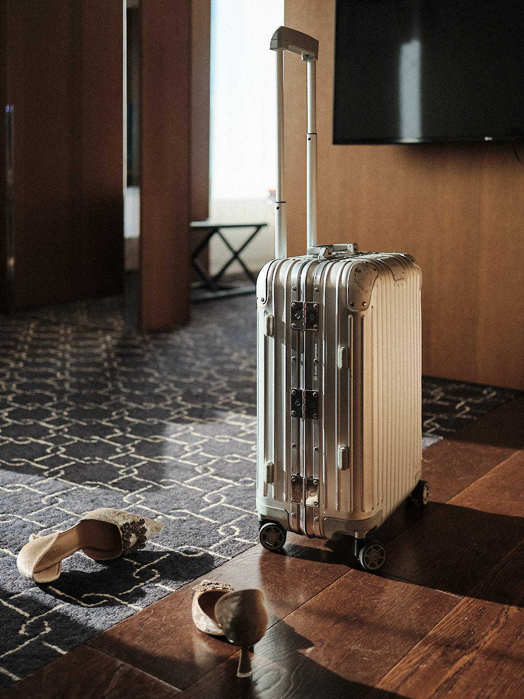
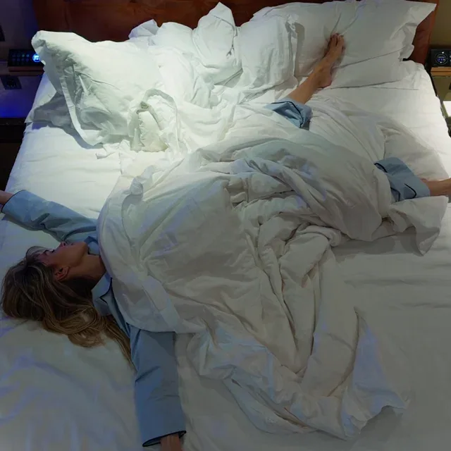
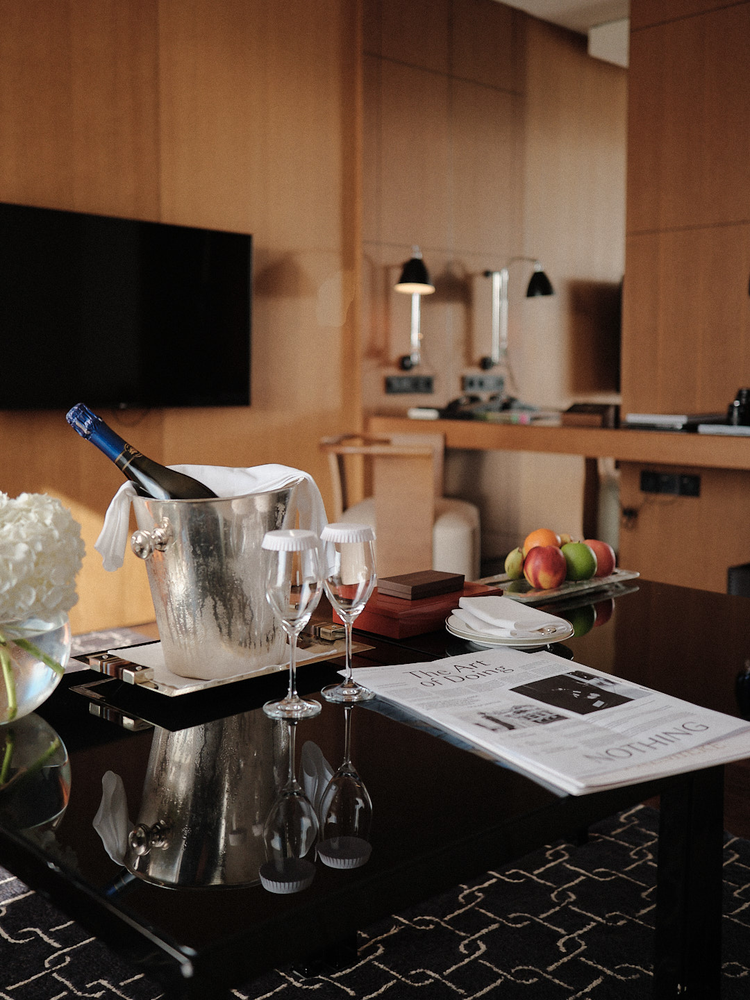
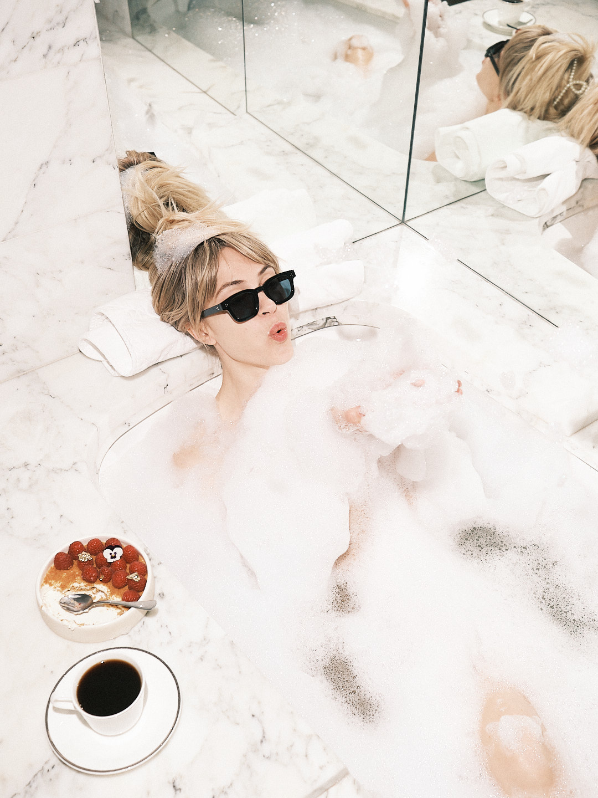

У отеля есть свой ритм. Мы шли за ним.
В одном проекте соединились тихое утро, город за окном, детали номера, ресторан и вечер. Эти кадры показывают, как бренд может говорить о себе через прожитые моменты, а не только через перечень удобств.
Ниже — фото и видео из нашей съёмки: примеры визуальных историй, которые можно рассказать о месте.
История в движении.
Две части одного дня в Ararat Park Hyatt. Включите звук и посмотрите целиком.
Приехать.
Первый взгляд на пространство. Багаж уже в номере, можно выдохнуть и освоиться.

Остаться на утро.
Комната становится живой, когда в ней есть человек, свет и время для себя.




Почувствовать заботу.
Ресторан и сервис раскрываются через действия и детали, которые гость запоминает.

Не торопить вечер.
Когда город меняет свет, история отеля становится другой.


Какую историю можно найти у вас?
Она уже есть в вашем пространстве и людях. Давайте посмотрим на неё вместе.
Обсудить ваш проект